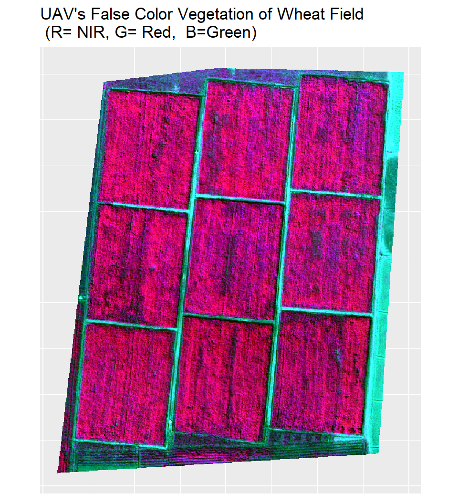
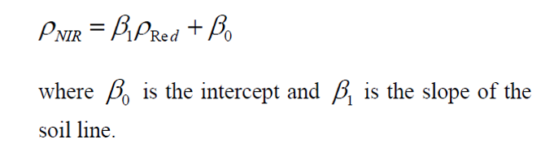
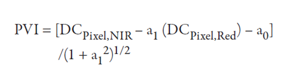
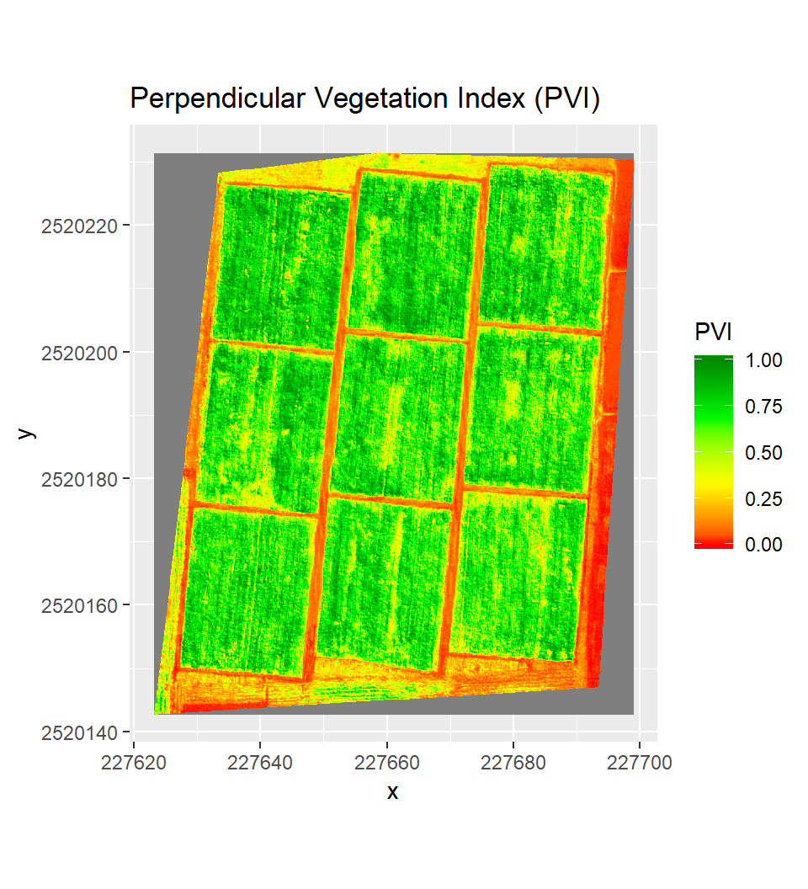
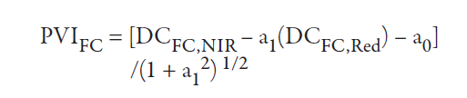
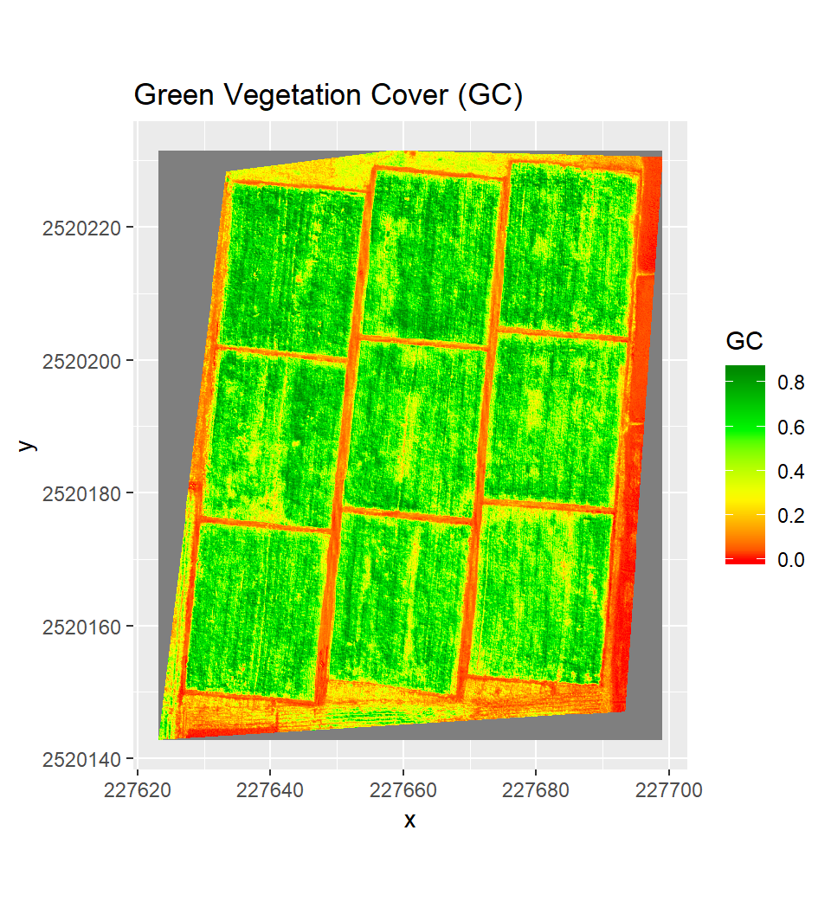
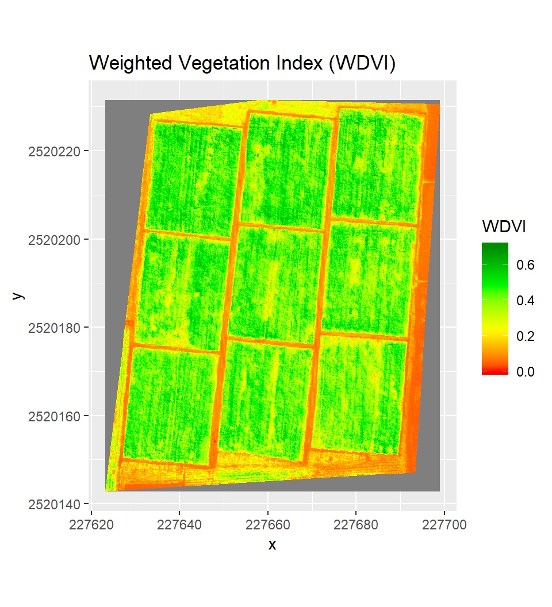

Green Ground Cover (GC) from UAV Images
Ground Cover or FCover is the percentage of green plant material that covers the surface. Monitoring FCover on crop fields indicates the rate of crop development and vigor. A relationship exists between fCover, NDVI, and LAI (Li et al., 2015; Richter et al., 2012; Shang et al., 2014). In most cases, however, this relationship is highly non-linear. FCover also provides a measure of the susceptibility to erosion. Crops with high fCover at early developmental stages intercept incident radiation and rainfall better, thereby increasing soil shading and decreasing soil evaporation. This can also be used to estimate irrigation requirements. Maas & Rajan (2008)] propossed a procedure that was developed to estimate GC of field crops from digital number (DN) of red and near-infrared (NIR) bands of Landsat satellite image. The processed method is the ratio of the perpendicular vegetation index (PVI) value calculated for an image pixel to the PVI value corresponding to full vegetation canopy.
In this exercise, we will show how to calculate the ground cover of a wheat field from very high-resolution multi-spectral images in Bangladesh. Images were acquired by Unmanned aerial vehicle (UAV) in February 2015 under STAR project funded by Gates Foundation. We will use reflectance of NIR and red bands to calculate Perpendicular Vegetation Index and ground cover. The data could be available for download here.
This lesson we will cover following:
Load pacakges
library(raster)
library(rgdal)
library(landsat)
library(sp)
library(RColorBrewer)
library(RStoolbox) # Image analysis
library(ggplot2)Load Data
The data could be available for download from here.
# Define data folder
dataFolder<-"F://Spatial_Data_Processing_and_Analysis_R//Data//DATA_09//"s=stack(paste0(dataFolder,".\\UAV\\multi_bwh_mc_20150212.tif"))Plot RGB Maps
p1<-ggRGB(s, r=5, g=2, b=3, stretch = "lin")+
theme(axis.title.x=element_blank(),
axis.text.x=element_blank(),
axis.ticks.x=element_blank(),
axis.title.y=element_blank(),
axis.text.y=element_blank(),
axis.ticks.y=element_blank())+
ggtitle("UAV's False Color Vegetation of Wheat Field\n (R= NIR, G= Red, B=Green)")
p1
Load Red and NIR Bands
b2.DN<-subset(s, 2) # Red bands
b5.DN<-subset(s, 5) # NIR bandsb2=na.omit(b2.DN)
b5=na.omit(b5.DN)Convert Raster to SpatialGridDataFrame
red = as(b2, "SpatialGridDataFrame") # red band
nir = as(b5, "SpatialGridDataFrame") # NIR bandBare Soil Line
The soil line is a linear relationship between the reflectance of the NIR and the Red bands for bare soil, is derived:

By plotting the value of the NIR in each pixel versus that of the Red one, a triangleshaped plot, as shown in the below left panel. In this plot, soil’s reflectance is a straight line, which indicates the line where the vegetation begins Vegetation increase significantly in the NIR but descends in the Red regions.

Now we will calculate Bare Soil Line (BSL) and maximum vegetation point with BSL() of landsat package. This method allows to calcualte soil line in two method: “quantile” or “minimum”. The quantile method takes the lowest set of points, those with a NIR/red ratio less than the llimit-th quantile. The minimum value method takes the lowest NIR value for each level of red.
bsl<- BSL(red, nir,method = "minimum") # minimum method## RMA was not requested: it will not be computed.## No permutation test will be performedlist(bsl) # see the list of output## [[1]]
## [[1]]$BSL
## Intercept Slope
## 11.9969144 0.9365042
##
## [[1]]$top
## band3 band4
## 6 178a1 =bsl$BSL[[2]] # slope of BSL
a0 =bsl$BSL[[1]] # intercept of BSLSlope = round(a1,3)
Intercept = round(a0,3)plot(as.vector(as.matrix(red)), as.vector(as.matrix(nir)),
main="Bare Soil Line",
xlab="RED-band", ylab="NIR-band", xlim=c(0,255), ylim=c(0,255),
pch=19, cex=0.7, col="grey")
abline(bsl$BSL, col="red") # regresion line
points(bsl$top[1], bsl$top[2], col="green", cex=2, pch=16) # plot miximum vegetation point
text(150, 65,"a1",pos=4)
text(165, 65,"=",pos=4)
text(175, 65,Slope,pos=4)
text(150, 50,"a0",pos=4)
text(165, 50,"=",pos=4)
text(175, 50,Intercept,pos=4)
Perpendicular Vegetation Index
Perpendicular Vegetation Index (PVI) any point calculated as:

Where, in which a1 and a0 are the slope and intercept, respectively, of the bare soil line.
a2= (1+a1^2)^0.5 # nominator of the equations
# PVI
PVI = (b5 - a1*b2- a0)/a2
PVI[PVI < 0.000] <- 0.000
PVI[PVI > 100.001] <- 100
PVI.1<-PVI/100Plot Perpendicular Vegetation Index (PVI)
ggR(PVI.1, geom_raster = TRUE) +
scale_fill_gradientn("PVI",
colours = c("red", "yellow", "green", "green4"))+
ggtitle("Perpendicular Vegetation Index (PVI)")
PVI associated with full vegetation canopy (PV1-FC):

# NIR and Red values at full Grouncover
FC.b2 = bsl$top[[1]] # Red value at Full ground cover
FC.b5 = bsl$top[[2]] # NIR value at Full ground cover
PVI.FC = (FC.b5 -(a1*FC.b2) - a0)/a2
PVI.FC ## [1] 117.0643Ground Cover
An approximate value of GC associated with any point can be calculated as the ratio of PVI and PVI-FC of corressponding full canopy:

# Calculate fraction of GC
GC = PVI/PVI.FC
# Omit value greater than 1 and lower than 0
GC[GC > 1.00001] <- 1
GC[GC < 0] <- 0Plot Ground Cover
ggR(GC, geom_raster = TRUE) +
scale_fill_gradientn("GC",
colours = c("red", "yellow", "green", "green4"))+
ggtitle("Green Vegetation Cover (GC)")
Weighted Difference Vegetation Index
# WDVI = NIR - (a1 * red)
WDVI=b5/255-(a1*b2/255)
WDVI[WDVI > 1] <-1
WDVI[WDVI < 0.000] <- 0.000Plot Weighted Vegetation Index
ggR(WDVI, geom_raster = TRUE) +
scale_fill_gradientn("WDVI",
colours = c("red", "yellow", "green", "green4"))+
ggtitle("Weighted Vegetation Index (WDVI)")
rm(list = ls())